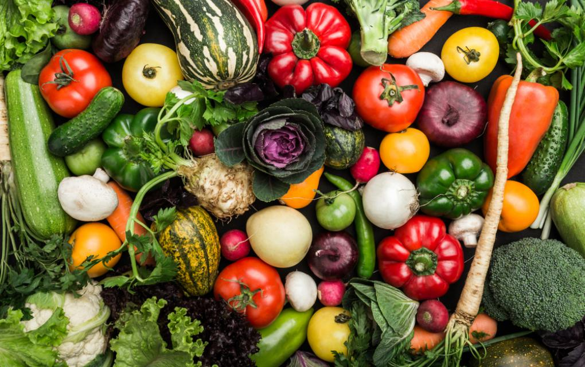
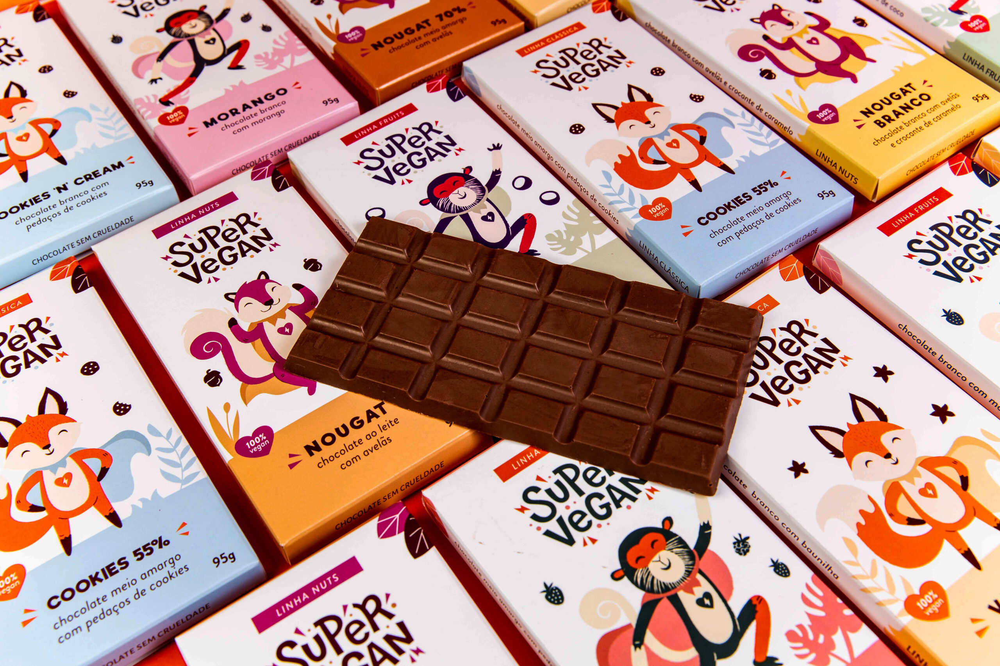
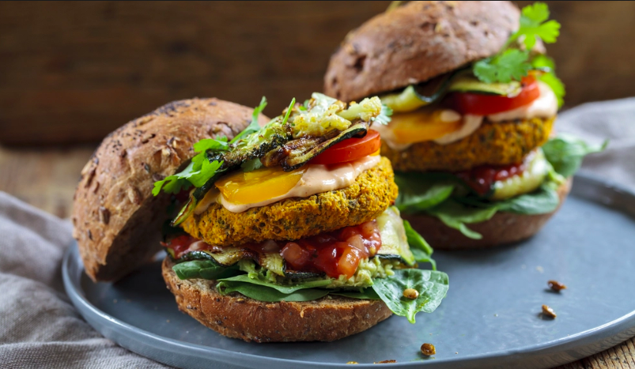

O veganismo é um estilo de vida baseado na escolha de não consumir produtos de origem animal, seja em alimentos, vestuário ou outros itens do cotidiano. Essa filosofia vai além de uma dieta; ela envolve uma série de atitudes e valores que buscam minimizar o sofrimento e a exploração dos animais.

É verdade que veganos só comem coisas verdes chatas? Não! Doces veganos são sobremesas feitas sem ingredientes de origem animal, substituindo leite, ovos e manteiga por alternativas vegetais, como leites vegetais, óleos e adoçantes naturais.

Salgados veganos são opções de lanches e pratos salgados que não contêm ingredientes de origem animal. Eles são preparados com substituições como grãos, vegetais, tofu, seitan e legumes.
| Nome da Loja | Localização |
|---|---|
| Vegano Delícia | Rua Verde, 123 - Jardim São Paulo |
| Fábrica Veg | Avenida da Sustentabilidade, 45 - Vila Consciente |
| Vida Natural | Praça Eco, 78 - Centro |
| Sabores Puro Verde | Rua das Flores, 89 - Bairro Alegre |
| Green Eats | Alameda Floresta, 202 - Parque Verde |